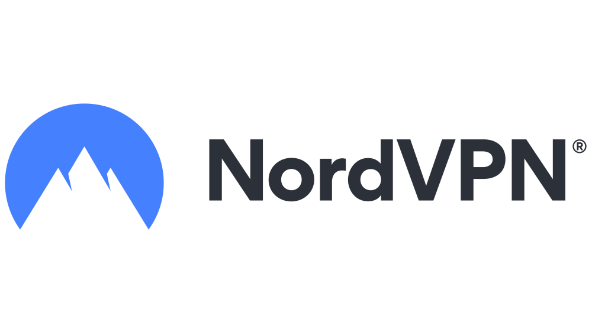

2023年最好的vpn
由于每个人对VPN的需求可能不同，因此不存在适用于所有情况的“最佳”VPN。但是，我们可以根据以下因素来评估和选择最适合您需求的VPN。VPN不同的方案价格可能会不同，但一个好的VPN应该提供合理的价格计划并且可以为您的个人或企业需求提供全面解决方案。
2023年最好的VPN推荐
VPN连接速度必须快而稳定以确保良好的使用体验。因此，您需要测试VPN速度，以确定其连接速度是否足够快，并且对不同网络条件下的连接情况进行测试。一个好的VPN不仅需要在PC上运行，还需要支持各种移动设备，并适应各种操作系统和平台。此外，它还应该容易配置和使用，以便尽可能多的用户使用。
| 商家 | 月付 | 12月（月付） | 方案及测评 |
|---|---|---|---|
| ExpressVPN | $ 12.95 | $ 8.32 | 查看测评 |
| Surfshark VPN | $ 12.95 | $ 3.99 | 查看测评 |
| NordVPN | $ 15.69 | $ 7.29 | 查看测评 |
| PureVPN | $ 16.90 | $ 6.66 | 查看测评 |
| VyprVPN | $ 10.00 | $ 5.00 | 查看测评 |
| IvacyVPN | $ 9.95 | $ 3.99 | 查看测评 |
| TunnelBear | $ 9.99 | $ 4.99 | 查看测评 |
| VPN Master | $ 12.99 | $ 5.33 | 查看测评 |
| Atlas VPN | $ 10.99 | $ 4.08 | 查看测评 |
| Cyber Ghost VPN | $ 12.99 | $ 6.99 | 查看测评 |
| OpenVPN | $ 9.00 | $ 7.00 | 查看测评 |
| Proton VPN | € 9.99 | € 5.99 | 查看测评 |
| Hide.me VPN | $ 9.95 | $ 5.82 | 查看测评 |
| PrivadoVPN | $ 10.99 | $ 4.99 | 查看测评 |
最后，请注意，VPN测试是相对和主观的，并可能因个人需求和网络条件而有所不同。因此，您应该针对自己的需求和偏好选择最适合您的VPN。一个好的VPN除了拥有高质量的服务之外，还需要提供出色的售后支持。这包括即时的帮助支持、FAQ、社区论坛等资源，以满足用户在使用中遇到的问题和需求。
ExpressVPN
ExpressVPN是一个流行的虚拟私人网络（VPN）服务供应商。它成立于2009年，总部位于英属维京群岛，并在全球范围内提供服务。ExpressVPN提供高速、安全、无限带宽和隐私保护的VPN服务，可以帮助用户在互联网上保持匿名和安全。该服务使用加密技术来隐藏用户的IP地址和浏览历史，从而使用户能够在不同地理位置访问受限内容，并避免监管和审查。 它还提供了易于使用的应用程序，可以在Windows、Mac、iOS、Android等各种平台上使用。
ExpressVPN 提供了不同的订阅选项和价格，价格取决于您选择的订阅期长。在他们的网站上，他们提供以下几种订阅选项：
| 计划 | 价钱 |
|---|---|
| 月付费计划 | 每月 $12.95 |
| 年付费计划 | 一次性支付 $99.95（相当于每月 $8.32） |
| 6个月付费计划 | 一次性支付 $59.95（相当于每月 $9.99） |
ExpressVPN 值得注意的是，这些价格可能会因为区域、优惠时间等原因而有所变化。ExpressVPN 还时常提供节日或其他特殊活动的折扣，您可以通过他们的官方网站或其他在线渠道了解到这些信息。
Surfshark VPN

Surfshark VPN是一种虚拟私人网络服务，旨在提供高速、安全、无限宽带和隐私保护的互联网访问。它被设计为可以隐藏用户的IP地址和浏览历史，从而提供匿名性并使用户能够在使用互联网时享有更高的自由度。Surfshark VPN采用了加密技术，以确保用户的在线活动不会被监视或记录，并允许用户在其设备上访问各种地理位置受限内容。该VPN服务还提供易于使用的应用程序，允许在多种平台上使用，例如Windows、Mac、iOS和Android等操作系统。
Surfshark VPN是一款功能强大的虚拟专用网络服务，可以为您提供更安全和私密的上网体验。目前，Surfshark VPN的定价如下：
| 计划 | 价钱 |
|---|---|
| 月付费计划 | $12.95/月 |
| 一年计划 | $3.99/月，共$51.71/年 |
| 两年计划 | $2.49/月，共$64.54/两年 |
可以看到，越长时间的订阅计划，每月的平均价钱就会越便宜。此外，Surfshark VPN也经常举行特价促销活动，例如打折或附赠额外服务等，用户可以关注其官方网站或社交媒体页面获取最新优惠信息。总之，Surfshark VPN的价格相对合理，性价比较高，适合需要保护个人隐私和资料安全的用户选择。
NordVPN
NordVPN是一种虚拟私人网络（VPN）服务，旨在提供高速、安全、无限宽带和隐私保护的互联网访问。它被设计为可以隐藏用户的IP地址和浏览历史，从而提供匿名性并使用户能够在使用互联网时享有更高的自由度。NordVPN采用了加密技术，以确保用户的在线活动不会被监视或记录，并允许用户在其设备上访问各种地理位置受限内容。该VPN服务还提供易于使用的应用程序，允许在多种平台上使用，例如Windows、Mac、iOS和Android等操作系统。
NordVPN 是一款功能强大的虚拟私人网络服务，可以为用户提供更安全和私密的上网体验。目前，NordVPN 的定价如下：
| 计划 | 价钱 |
|---|---|
| 月付费计划 | $15.69/月 |
| 一年计划 | $7.29/月，共$ 109.35/年 |
| 两年计划 | $6.69/月，共$180.63/两年 |
NordVPN 所有订阅计划都支持所有设备同时连接，并附带 30 天内可退款的保证，也经常举行特惠促销活动，例如打折或者附赠额外服务等。总之，NordVPN 的价格相对较高，但是其提供了高质量、安全性高、网络速度快等诸多优点，因此适合有保密需求、重视隐私的用户选择。
PureVPN
PureVPN是一种虚拟私有网络（VPN）服务，致力于提供高速、安全、无限带宽和隐私保护的互联网访问。PureVPN可以隐藏您的IP地址和上网历史记录，从而为您提供匿名性并允许您在使用Internet时更加自由地浏览内容。它采用了加密技术，以确保您的在线活动不会被监视或记录，并使您能够在各种地理位置上访问受限制的内容。该服务还提供易于使用的应用程序，可以在多个平台上使用，例如Windows、Mac、iOS和Android等。此外，PureVPN还提供其他功能，例如防火墙、广告拦截和恶意软件保护等。
PureVPN 是一款功能强大的虚拟私人网络服务，可以为用户提供更安全和私密的上网体验。目前，PureVPN 的定价如下：
| 计划 | 价钱 |
|---|---|
| 月付费计划 | $10.95/月 |
| 一年计划 | $3.32/月，共$39.95/年 |
| 两年计划 | $2.08/月，共$49.95/两年 |
可以看到，PureVPN 提供了丰富的订阅计划选择，也附带了 31 天内可退款的保证。此外，PureVPN 还有时会推出打折或者其他优惠活动，例如附赠额外的服务或者特别节日优惠等。总之，PureVPN 的价格相对于其他竞争对手较为优惠，但是同样也提供了高质量、安全性高、网络速度快等诸多优点，因此适合需要保密性、重视隐私并且预算不高的用户选择。
VyprVPN
VyprVPN是一种基于云的虚拟专用网络（VPN）服务，允许用户在互联网上进行匿名、安全和自由的上网活动。VyprVPN提供超过70个服务器位置，遍布全球，使用高级加密协议如OpenVPN、L2TP/IPSec和IKEv2等来保护您的在线隐私和活动。它还具有NAT防火墙功能，并支持多个平台，包括Windows、Mac、iOS和Android。 VyprVPN还提供易于使用的应用程序，可实现自动连接和无限带宽等其他功能。总体而言，VyprVPN是一种可靠的VPN服务，适合那些需要在互联网上安全传输敏感数据或浏览受限制的内容的人。
VyprVPN 是一款功能强大的虚拟私人网络服务，可以为用户提供更安全和私密的上网体验。目前，VyprVPN 的定价如下：
| 计划 | 价钱 |
|---|---|
| 年付价格 | $5.00/月或 $60/年 |
| 高级计划 | $10.00/月 |
此外，VyprVPN 还有时会推出打折或者其他优惠活动，例如附赠额外的服务或者特别节日优惠等。可以看到 VyprVPN 提供了两种套餐供用户选择，其中高级计划可以多连接2个设备，并且支持更多的 VPN 协议，包括 OpenVPN、 L2TP/IPsec、PPTP 和 Chameleon 等。总之，VyprVPN 提供的服务质量高、速度快、安全性好，而且定价也相对于同类产品来说较为实惠，因此适合需要保密性和追求高速网络连接的用户选择。
IvacyVPN
IvacyVPN是一种基于云的虚拟专用网络（VPN）服务，允许用户在互联网上进行匿名、安全和自由的上网活动。IvacyVPN提供1000多个服务器位置，遍布全球，使用高级加密协议如OpenVPN、L2TP/IPSec和IKEv2等来保护您的在线隐私和活动。它还具有Kill Switch功能以及IPv6泄漏保护，并支持多个平台，包括Windows、Mac、iOS和Android。IvacyVPN还提供易于使用的应用程序，可实现自动连接和无限带宽等其他功能。总体而言，IvacyVPN是一种可靠的VPN服务，适合那些需要在互联网上安全传输敏感数据或浏览受限制的内容的人。
IvacyVPN 提供了以下的套餐选择，具体价格如下：
| 计划 | 价钱 |
|---|---|
| 月付费计划 | $9.95/月 |
| 一年计划 | $3.99/月，共$71.4/年 |
| 五年计划 | $1.00/月，共$537/两年 |
IvacyVPN 使用了256位加密技术以确保用户的在线安全和隐私，并可以解锁区域限制内容。此外，它还提供了丰富的VPN服务器地点覆盖以及其他高级功能，例如IPv6泄漏保护、无记录政策、P2P支持等等。总之，IvacyVPN 是一款性价比较高的 VPN 产品，适合需要长期使用 VPN 且预算有限的用户选择。
TunnelBear
TunnelBear是一种虚拟私人网络（VPN），旨在提供安全、私密的互联网连接。它可以帮助用户浏览受限制的内容，隐藏他们的IP地址以及加密他们的在线活动，从而保护他们的隐私和数据安全。TunnelBear由加拿大的一家公司开发，它具有许多先进的功能，包括VigilantBear（Kill Switch）技术，可确保您的在线数据不会泄漏。同时，TunnelBear还提供许多优点，例如易于使用的应用程序，跨平台支持，强大的加密算法等。TunnelBear VPN拥有免费和付费版本，用户可以根据自己的需要选择适合自己的版本。总之，TunnelBear是一种可靠的VPN服务，非常适合那些需要在互联网上进行安全、私密连接的人。
TunnelBear 是一款强大的 VPN 产品，提供了以下几种不同的套餐选择：
| 计划 | 价钱 |
|---|---|
| 免费方案 | 2GB 流量 |
| 无限流量 | $3.33/月 |
| 团队 | $5.75/月 |
在个人专业版中，你可以享受无限的数据传输和使用 TunnelBear 的服务器网络（覆盖22个国家）。同时，该版本还提供了支持五台设备同时连接、加密技术为AES-256位等高级功能。团队版则适用于需要多个账号的公司或组织，可以创建多个子账号并随时管理成员。总之，TunnelBear 提供了高质量的 VPN 服务，适合个人用户和企业用户使用。
VPN Master
VPN Master提供了超过2000个服务器节点，分布在全球45多个国家和地区，包括北美、南美、欧洲、亚洲和非洲等地区。用户可以轻松选择服务器，以获得最快速度和最佳连接质量。此外，VPN Master支持多种加密协议和技术，如OpenVPN、IKEv2/IPSec、PPTP和L2TP等，以确保用户的隐私和安全。
VPN Master 是一款 VPN 服务提供商，它提供了两种付费计划：月度和年度。 VPN Master 的月度计划价格为 $11.99，而年度计划则为 $35.99。这相当于每月只需支付 $2.99，比起月度计划要更加实惠。 购买 VPN Master 的任一计划都可以享受以下功能和服务：
| 计划 | 价钱 |
|---|---|
| 月付费计划 | $12.99/月 |
| 一年计划 | $5.33/月，共$79.99/年 |
| 两年计划 | $3.75/月，共$89.99/两年 |
值得注意的是，VPN Master 提供了 7 天免费试用，让用户可以在购买前先尝试并确认是否合适自己的需求。如果你对 VPN Master 感兴趣，可以先试用一下再考虑是否购买其中的一个计划。
Atlas VPN
Atlas VPN是一款由立陶宛开发团队制作的免费虚拟私人网络（VPN）应用程序，它旨在为用户提供更安全、隐私和自由的互联网连接。Atlas VPN可以帮助用户访问那些受地理限制或其他原因无法访问的内容，同时隐藏他们的真实IP地址和加密他们的在线活动以保护他们的隐私和数据安全。
Atlas VPN 是一款免费的 VPN 产品，同时还提供了付费的高级版本：Premium。 在 Atlas VPN 的免费版中，你可以享受无限制的数据流量和高速连接，但同时也有一些限制，比如：
| 计划 | 价钱 |
|---|---|
| 月付费计划 | $10.99/月 |
| 一年计划 | $4.08/月，共$49.01/年 |
| 三年计划 | $1.83/月，共$71.49/三年 |
综上所述，如果你需要更多的功能和服务，可以考虑购买 Atlas VPN Premium 版本。在 Atlas VPN 的免费版中，你可以享受无限制的数据流量和高速连接，但同时也有一些限制
Cyber Ghost VPN
CyberGhost VPN提供了超过6300个服务器节点，分布在全球约90个国家和地区，包括北美、南美、欧洲、亚洲和非洲等地区。CyberGhost VPN是一个很受欢迎的VPN服务，对于需要保护在线隐私和访问受限内容的用户来说是一个不错的选择。然而，用户需要注意的是，连接速度和连接质量可能会因服务器拥堵等原因而有所下降。此外，在使用免费版本时可能会有一些限制和干扰。
CyberGhost VPN 是一家著名的 VPN 服务提供商，为用户提供了多种不同的付费计划。 对于新用户来说，它提供了以下三种不同的付费选项：
| 计划 | 价钱 |
|---|---|
| 月付费计划 | $12.99/月 |
| 二年计划 | $2.19/月，共$56.94/年 |
| 六个月计划 | $6.99/月，共$41.94/两年 |
总体来说，CyberGhost VPN 在服务质量、可靠性和隐私保护方面都表现得非常出色，其不同的付费计划也可以满足不同类型和需求的用户。
OpenVPN
OpenVPN是一种基于SSL/TLS协议的开源虚拟私人网络（VPN）解决方案。它提供了一种安全的方式，用于通过公共互联网连接多个远程位置之间的计算机和设备，同时保护数据的机密性和完整性。OpenVPN主要使用可靠的加密算法来保护通信，包括AES、Blowfish、Camellia、3DES等。OpenVPN是一种高度灵活，可扩展性强且安全的VPN解决方案。它提供了极高的安全性和可靠性，是网络管理员和企业用户的首选VPN方案之一。
OpenVPN 是一种开源的 VPN 协议，可以帮助用户在互联网上安全地访问网络资源。作为一种协议，OpenVPN 本身并没有价格，用户可以按照自己的需要和偏好选择不同的 OpenVPN 服务提供商。
| 计划 | 价钱 |
|---|---|
| 免费计划 | $0/月 |
| 月付费计划 | $7.00/月 |
总体来说，OpenVPN 服务提供商的价格因服务质量、服务器数量、隐私保护等方面变化很大。建议用户在选择时，先了解其所需的功能和服务，再根据自己的实际情况选择提供商。
Proton VPN
Proton VPN是一款由Proton Technologies AG开发的虚拟私人网络（VPN）服务。Proton VPN旨在为用户提供更加安全和隐私的在线体验。Proton VPN还通过其“Secure Core”功能提供了额外的安全性。Secure Core是一种双重VPN隧道系统，可将用户数据流量路由到具有更高级别的安全措施的服务器。这样做可以防止攻击者或监视者通过监视用户流量来识别他们的真实位置或访问数据。
PureVPN 是一款功能强大的虚拟私人网络服务，可以为用户提供更安全和私密的上网体验。目前，PureVPN 的定价如下：
| 计划 | 价钱 |
|---|---|
| 月付费计划 | € 9.99/月 |
| 一年计划 | € 5.99/月，共€ 71.88/年 |
| 两年计划 | € 4.99/月，共€ 119.76/两年 |
需要注意的是，这里给出的是标准价格，ProtonVPN 经常会推出折扣和优惠活动，用户可以通过网站或其他渠道获取最新信息。Visionary 服务是 ProtonVPN 最全面的服务方案之一，除了将 Plus 服务升级至 Visionary 外，还提供终身版 ProtonMail Visionary 邮箱账户，支持10个设备上线。
Hide.me VPN
Hide.me VPN是一款由eVenture Ltd.开发的虚拟私人网络服务。Hide.me VPN致力于为用户提供安全、匿名和高速的互联网连接。Hide.me VPN还提供了诸如电子邮件支持、Live chat支持等各种功能。此外，它还具有“Split Tunneling”功能，允许用户选择哪些应用程序将基于VPN连接，而其他应用程序则通过标准Internet连接进行传输。
Hide.me VPN 是另一款常见的虚拟私人网络服务提供商，其价格根据服务的不同计划和功能也有所不同。以下是 Hide.me VPN 的价格情况：
| 计划 | 价钱 |
|---|---|
| 月付费计划 | $9.95/月 |
| 六月计划 | $4.92/月，共$34.95/年 |
| 两年计划 | $2.59/月，共$69.95/两年 |
| 免费方案 | 每月 10 GB |
需要注意的是，像许多其他 VPN 服务提供商一样，Hide.me VPN 也会不定期推出优惠活动来吸引新客户或奖励现有客户，因此用户需要关注其官方网站以获取最新信息。Premium 版本则进一步升级了服务器位置，同时提供了“定制安全协议”、“可配置的路由器”等高级功能。
PrivadoVPN
PrivadoVPN是一款由Privado Networks Ltd.开发的虚拟私人网络服务。PrivadoVPN致力于为用户提供安全、保密和私密的互联网连接，以确保其隐私得到完全保护。PrivadoVPN使用高级加密算法来保护用户隐私和安全，并提供多个协议（包括OpenVPN、IKEv2、L2TP/IPSec）和多个服务器位置（包括美国、英国、荷兰等），以快速且稳定地连接到互联网。该服务不会记录用户的浏览历史或其他在线活动，并在每个服务器上都有自己的DNS解析器，以避免第三方跟踪或DNS泄漏。
PrivadoVPN 是一家虚拟私人网络服务提供商，如果用户希望节省更多资金，可以选择两年订阅，这相当于每月 $3.29。这种计划同样适用于最多五个设备的连接。其价格计划如下：
| 计划 | 价钱 |
|---|---|
| 月付费计划 | $10.99/月 |
| 一年计划 | $4.99/月，共$59.88/年 |
| 两年计划 | $3.99/月，共$95.76/两年 |
PrivadoVPN 还提供了一个 7 天免费试用版，以便用户体验其服务。在试用结束之后，用户需要选择一个按月或按年付款的计划来继续使用服务。需要注意的是，在 PrivadoVPN 官网购买会更可靠，因为有时其他第三方网站可能会提供虚假的折扣或价格。
什么是VPN?
VPN（Virtual Private Network，虚拟专用网络）是一种通过公共网络（例如互联网）建立安全和加密的连接方式，用于保护用户的隐私和安全。
VPN 连接可以创建一个安全的、经过加密的通道，将您的计算机或移动设备与 VPN 服务器之间的通信隔离开来，使得第三方无法窃取通信数据或隐私信息。通过使用 VPN 连接，用户可以避免被追踪、监视或审查并能够访问地理位置受限制的内容和服务。
一些公司也会为其员工提供 VPN 连接，以便员工在外部网络上获取公司内部网络资源时，也能够得到安全保护。
如何选择稳定的VPN?
安全性：一个好的VPN应该提供高级别的加密保护，并确保用户信息和隐私得到完全保护。使用网络安全工具（如Wireshark）监视VPN连接并确认其是否采用了强大的加密方法以保护您的数据。您还可以检查VPN服务是否有DNS泄漏或IP泄漏等安全问题。
速度和稳定性：一个好的VPN应该具有快速、可靠、稳定的连接，使您能够流畅地浏览网页、下载文件等。使用速度测试工具（如SpeedTest.net）测试VPN连接的下载速度、上传速度和延迟时间等。这将为您提供关于VPN连接质量的快照；但请注意，速度可能会因诸如您的Internet带宽和VPN服务器距离等其他因素而有所不同。
支持的设备和平台：一个好的VPN应该支持您所使用的所有设备和操作系统，如Windows、Mac、iOS、Android等。
价格：一个好的VPN应该在合理的价格范围内，提供多种服务计划和灵活的付款选项。比较您选择的各个VPN方案，并选择最适合您需求的方案。比较计划、服务期限、付款方式等方面。
服务器分布和可访问性：一个好的VPN应该拥有广泛的服务器网络，遍布各地，以便您可以访问地理位置受限制的内容和服务。
根据这些标准，一些常见并被认为是优秀的VPN服务提供商包括 NordVPN、ExpressVPN、Surfshark、CyberGhost VPN等。然而，最终的选择还应考虑您自己的需求和预算等方面。
vpn推荐vpn下载vpn免費vpn中国 vpn排行NordVPNExpressVPN 佛跳墙vpn熊猫vpnvpn翻墙